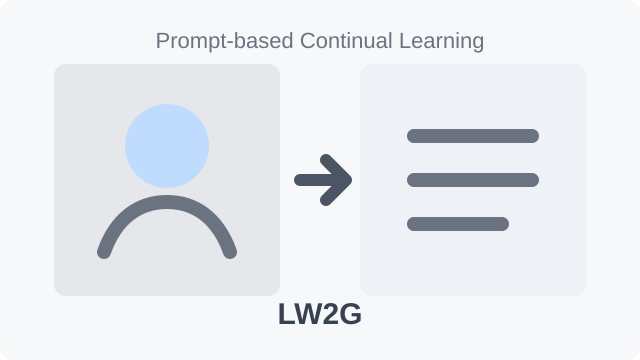
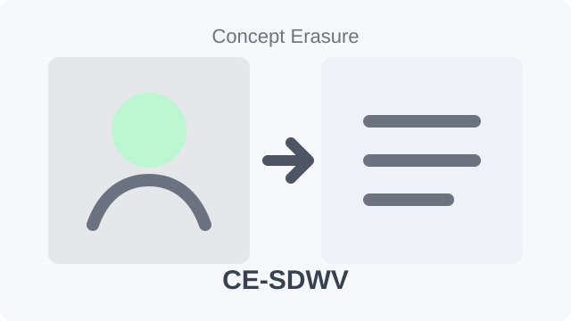
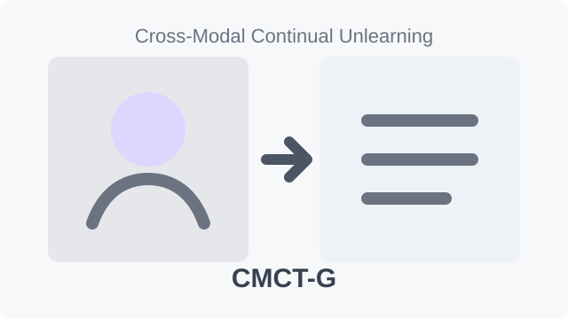
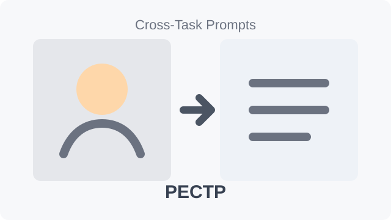
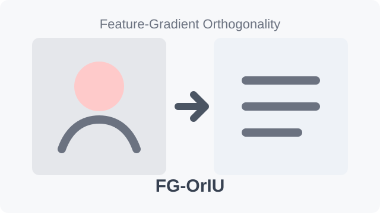

I am Qian Feng, a Ph.D. student in Computer Science and Technology at Zhejiang University, advised by Prof. Hui Qian and Prof. Hanbin Zhao. My research interests lie in continual learning, machine unlearning, trustworthy AI, and vision-language navigation.
Before joining Zhejiang University, I received my M.S. degree in Applied Statistics from Beijing Normal University, where I was advised by Prof. Yong Li and Prof. Jiakun Jiang, and my B.S. degree in Applied Statistics from Changsha University of Science and Technology. My current work focuses on parameter-efficient continual adaptation for ViTs, CLIP, and VLLMs, as well as reliable unlearning methods for multimodal and generative models.

IJCV
IJCV
IJCV
TCSVT
ICCVReviewer for ICCV 2025, ICLR 2025/2026, IEEE TIP, IEEE TCSVT, and JMLR.
Powered by GitHub Pages. Style inspired by Jekyll and Minimal Light.